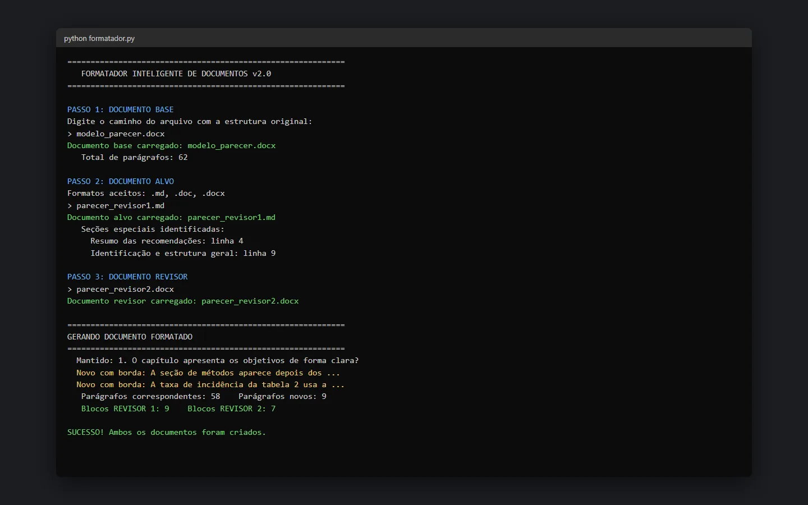
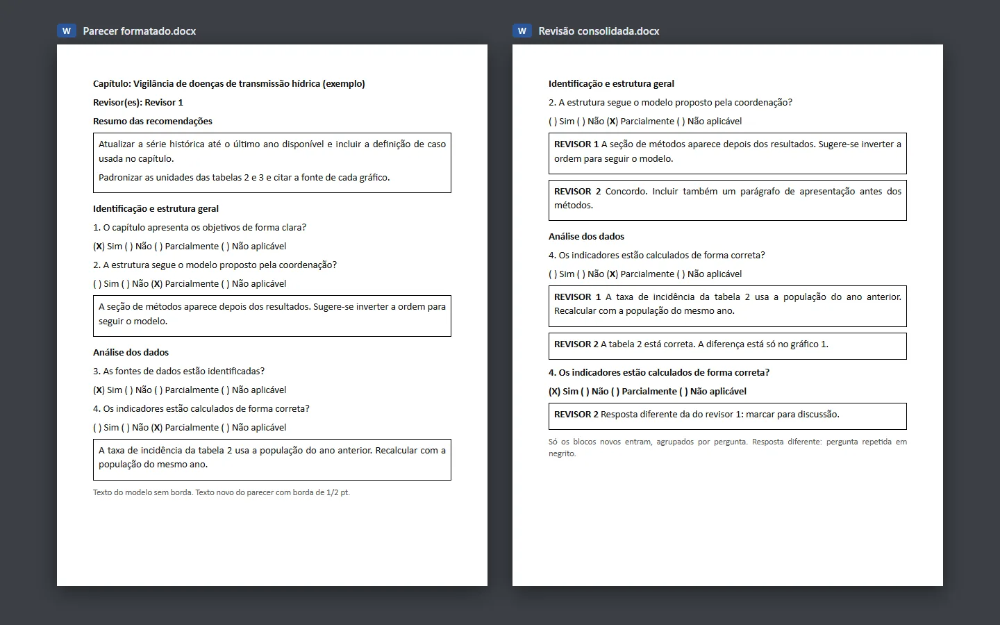

Formatador de pareceres técnicos
Ferramenta para a revisão de capítulos de vigilância em saúde: converte os documentos, compara o parecer com o modelo e com o de outro revisor e monta um Word em que só o conteúdo novo fica destacado.
- Contexto
- Revisão técnica para o Ministério da Saúde
- Entradas
- .doc, .docx e .pdf
- Comparação
- difflib
- Saída
- Dois documentos Word
Telas
Telas reproduzidas a partir do código, com texto genérico.




Fluxo do processo
Conversão
conversor_docling.py.doc, .docx e .pdf para Markdown
Entradas
ModeloWord com a formatação de referência
Parecertexto do revisor 1
Segundo parecertexto do revisor 2
Saídas
Parecer formatadotexto novo com borda
Revisão consolidadablocos novos por pergunta, dos dois revisores
Regra de comparação
Revisão consolidada
- CabeçalhoIgnora tudo antes de "Identificação e estrutura geral".
- BlocosAgrupa as linhas novas de cada revisor por pergunta, com uma borda por bloco.
- LimpezaTira do primeiro parecer a palavra OBSERVAÇÃO e as notas [Fonte: ...]; o segundo fica completo.
- Respostas diferentesQuando as marcações (X) não batem, repete a pergunta em negrito com a resposta do segundo revisor.
Saídas
- Parecer formatadoFormatação do documento base, com o texto novo destacado.
- Revisão consolidadaBlocos novos agrupados e identificados por revisor.
Tecnologias
PythonDoclingpython-docxdifflibmarkdown2pywin32